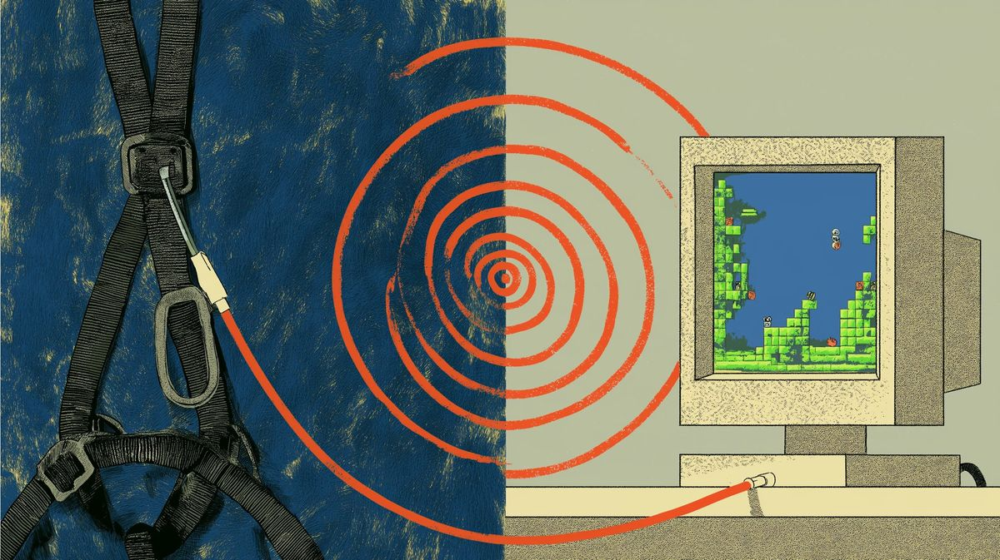
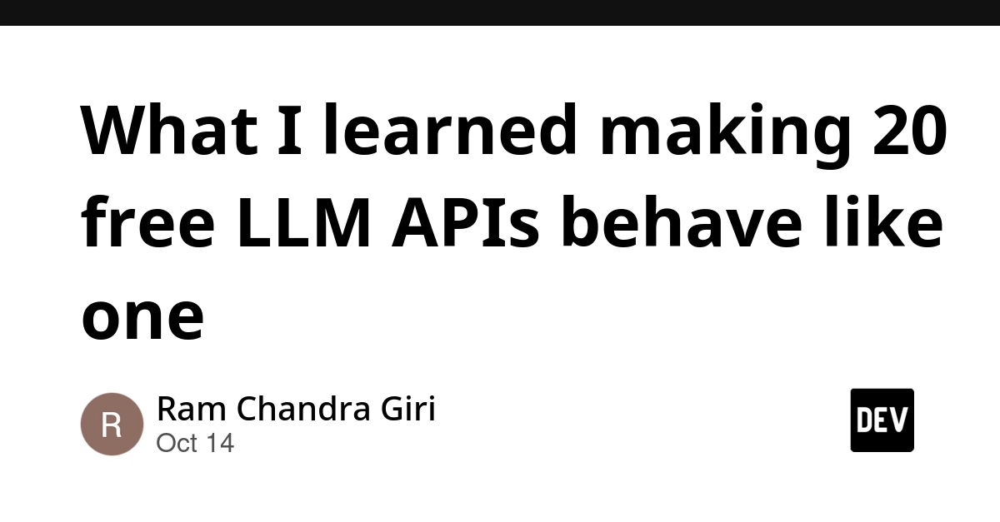
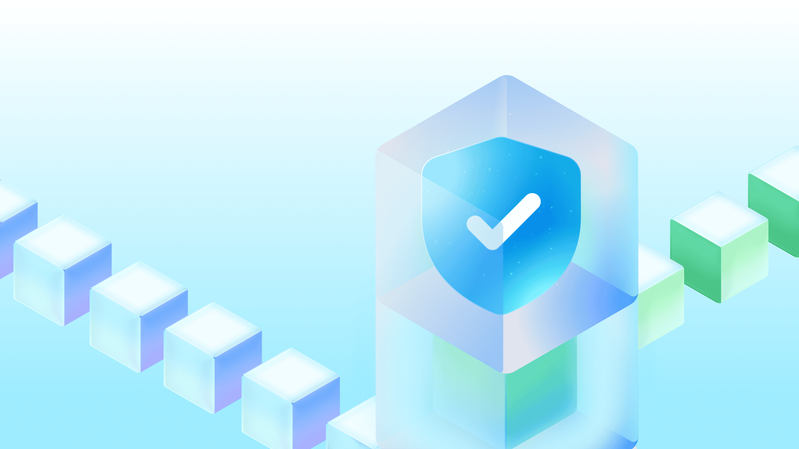
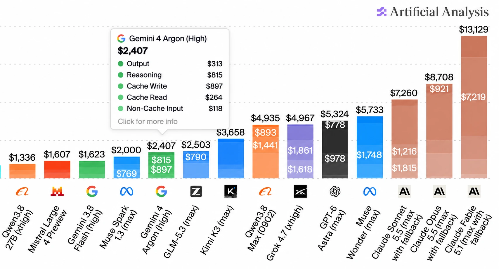
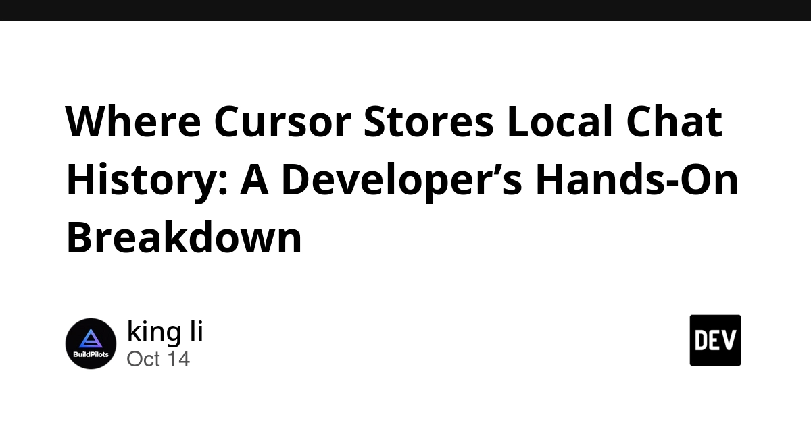
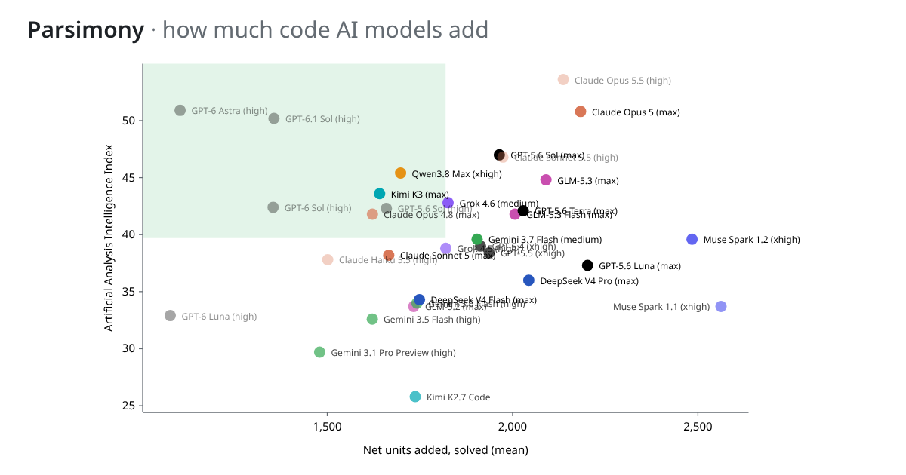
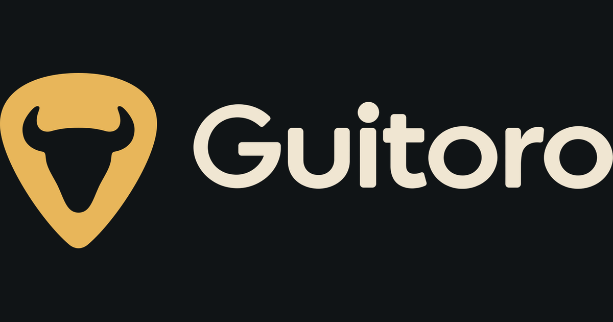
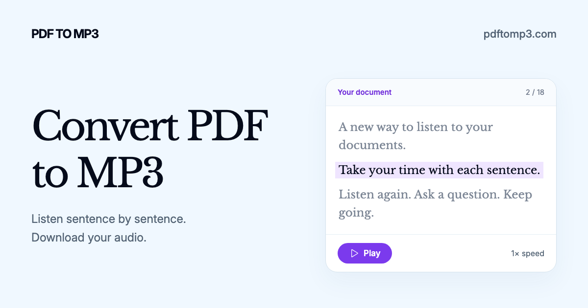
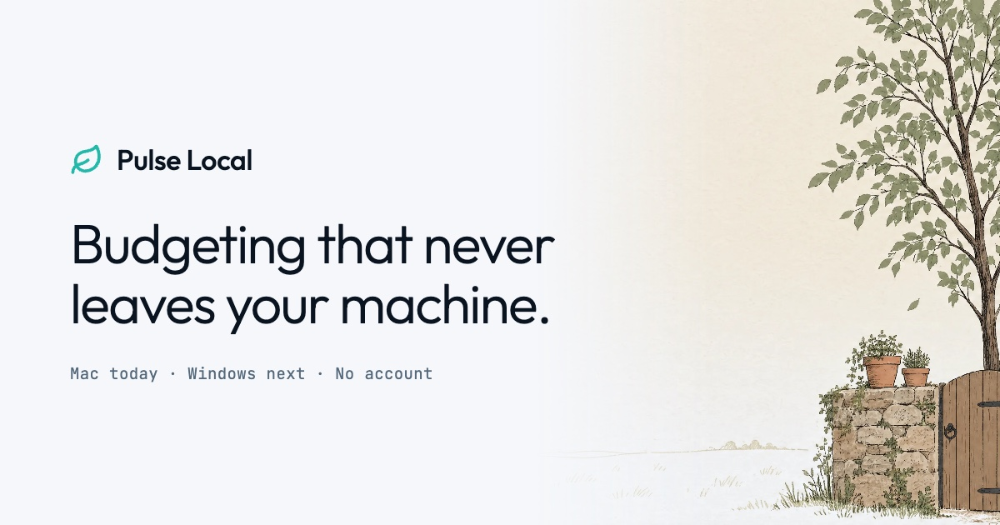
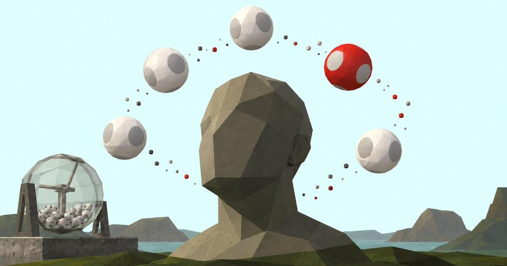

🔥 Top 3 (must read)
Redesigning source control at Anthropic
Anthropic explains why and how they built their own replacement for Git. AI agents made the number of code changes grow very fast: about 2,500 merged changes per day in May 2026, and more than 30,000 per day in September (Simon Willison's notes). Why it matters: It shows what happens to CI, code review and source control when a team fully adopts coding agents. This is the scale problem your own team may meet next.

Quoting Geoffrey Huntley: use pre-commit hooks to steer agents
Rules in AGENTS.md slowly drift, and agents still ignore them sometimes. Huntley adds a pre-commit hook instead. It checks the git diff for direct calls to observability modules, fails the commit, and adds a prompt that tells the agent to use the shared diagnostics library. He says the agent then follows the rule "ten out of ten" times. Why it matters: This is a cheap and repeatable way to make Claude Code or Copilot follow your team's rules. Machine checks do the job, so you do not depend on prompt text.
S
How to engineer an AI harness for game development
A hands-on write-up about building a "harness" around Claude Code for game development. A harness is the tools, checks and feedback loops the agent works inside. It had strong discussion on HN (136 points, 61 comments). Why it matters: The game is only the example. The real topic is how to design an agent's working setup, and that carries over to web and mobile codebases.

🛠 Tools & releases
llm-free-cascade
: a small Node package. It sends a chat request to Groq first. If Groq says no, it tries Gemini, then Cerebras, and so on through every free tier you have a key for. The post shares what was hard about making 20 APIs act like one.

GitHub's model for secret detection
: GitHub's new context-aware secret classifier gives fewer false alarms. Weighted acceptance is up 11.5%, and median scan time is down 86%. This is useful if your CI depends on GitHub secret scanning.

🤖 AI for developers
llm-gemini 0.35
: adds the new Gemini 4 Argon model. It is now available in the Gemini API and in the $100/month plan.

web-edit 0.1a1
: a real two-model workflow. GPT-6 Astra wrote a profiling report, and Claude Opus 5.5 used it to write the performance fixes.
S
Where Cursor stores local chat history
: the file paths for Cursor's local chat database. Useful if you want to back up or search past agent sessions.

👔 Engineering & teams
Parsimony
: an open-source benchmark that measures how much code AI models add. It fits code review talks about AI-made code bloat. (HN)

🎯 For me
EM / AI adoption: The Anthropic source control post shows how agent-driven teams outgrow normal Git and review flows.
Team practice you can copy: Use Huntley's pre-commit hook pattern to make agents follow your team's rules.
Node.js: llm-free-cascade is a ready-made fallback across LLM providers for side projects that use free tiers.
💡 App ideas & indie builds
Guitoro
: a virtual guitar you strum with your keyboard. It lets people play guitar sounds with no guitar. A strong example of fun UX from a simple input change (312 points).

PDF to MP3 with your OpenAI subscription
: turns documents into audiobooks using the user's own OpenAI subscription. The interesting idea is "bring your own AI plan", so the app does not pay the AI costs itself (HN).

Pulse Local
: a Mac budgeting app whose AI models run on your own machine. It solves the privacy worry about sending bank data to the cloud. Local AI as a selling point is worth noting for your own apps (HN).

How random are you?
: a small web test that shows how random (or not) your choices are. It is a tiny, shareable "test yourself" app, and the format gets people to engage (HN).

🎓 Try this
Add one pre-commit hook that acts as a rule for your coding agent, following Geoffrey Huntley's pattern. Pick one rule the agent keeps breaking, for example "use our logger, not
console.log". Make the hook check the staged diff, fail the commit, and print a clear fix-it message. The agent reads that message and fixes the code on its next try.